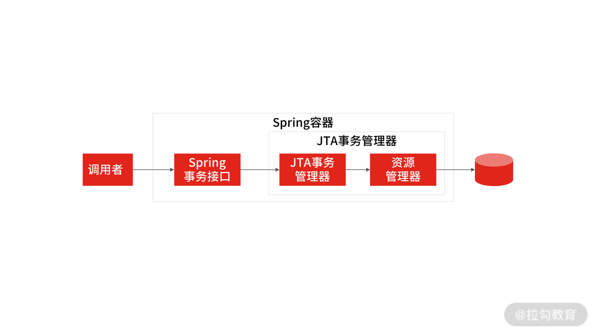
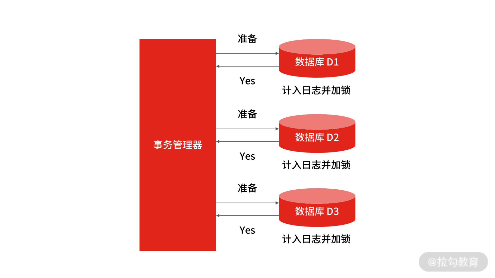
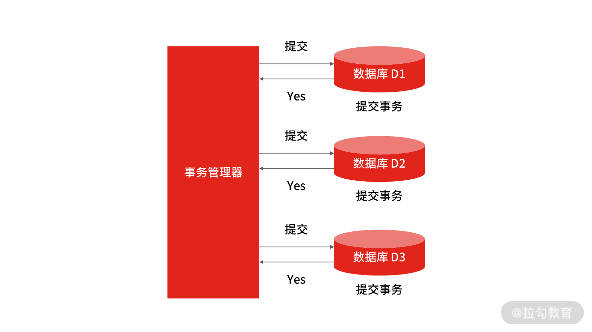
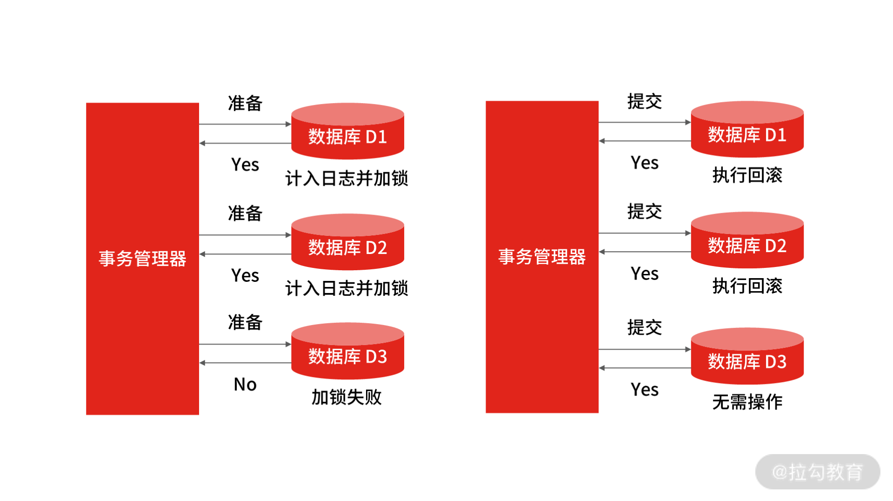
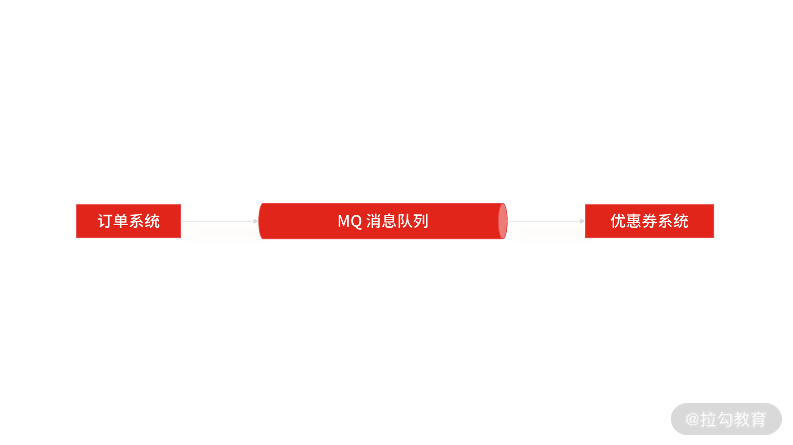
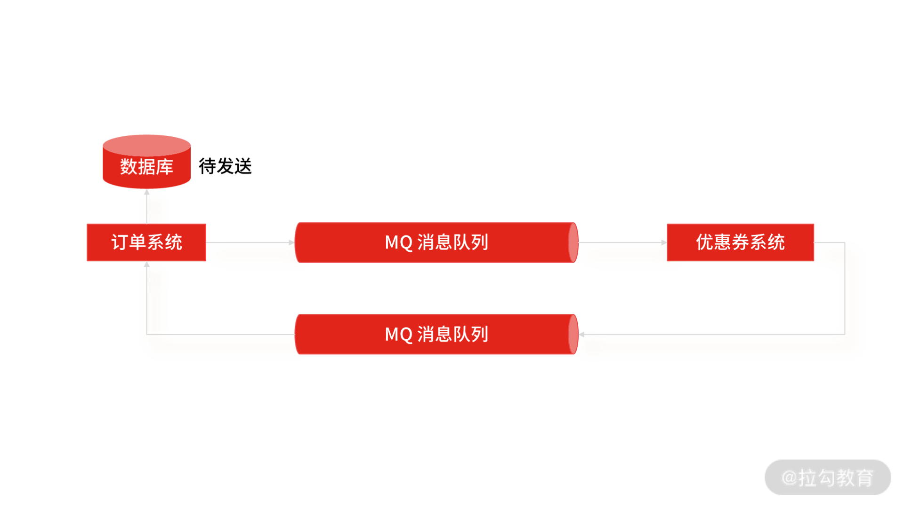

- 00 开篇词 中高级研发面试，逃不开架构设计这一环.md.html
- 01 研发工程师想提升面试竞争力，该具备这三个技术认知.md.html
- 02 研发工程师如何用架构师视角回答架构设计方案？.md.html
- 03 面试官如何考察与 CAP 有关的分布式理论？.md.html
- 04 亿级商品存储下，如何深度回答分布式系统的原理性问题？.md.html
- 05 海量并发场景下，如何回答分布式事务一致性问题？.md.html
- 06 分布式系统中，如何回答锁的实现原理？.md.html
- 07 RPC：如何在面试中展现出“造轮子”的能力？.md.html
- 08 MQ：如何回答消息队列的丢失、重复与积压问题.md.html
- 08 案例串联 如何让系统抗住双十一的预约抢购活动？.md.html
- 09 如何回答 MySQL 的索引原理与优化问题？.md.html
- 10 如何回答 MySQL 的事务隔离级别和锁的机制？.md.html
- 11 读多写少：MySQL 如何优化数据查询方案？.md.html
- 12 写多读少：MySQL 如何优化数据存储方案？.md.html
- 13 缓存原理：应对面试你要掌握 Redis 哪些原理？.md.html
- 14 缓存策略：面试中如何回答缓存穿透、雪崩等问题？.md.html
- 15 如何向面试官证明你做的系统是高可用的？.md.html
- 16 如何从架构师角度回答系统容错、降级等高可用问题？.md.html
- 17 如何向面试官证明你做的系统是高性能的？.md.html
- 18 如何从架构师角度回答怎么应对千万级流量的问题？.md.html
- 19 彩蛋 互联网架构设计面试，你需要掌握的知识体系.md.html
- 结束语 程序员的道、术、势.md.html
05 海量并发场景下，如何回答分布式事务一致性问题？
上一讲我通过亿级商品存储，带你了解了分布式技术下的数据分片、存储、复制与一致性的原理性问题，这一讲我将继续带你了解一致性的另一个话题：事务一致性。
案例背景
在互联网分布式场景中，原本一个系统被拆分成多个子系统，要想完成一次写入操作，你需要同时协调多个系统，这就带来了分布式事务的问题（分布式事务是指：一次大的操作由多个小操作组成，这些小的操作分布在不同的服务器上，分布式事务需要保证这些小操作要么全部成功，要么全部失败）。那怎么设计才能实现系统之间的事务一致性呢？ 这就是咱们今天要讨论的问题，也是面试的高频问题。
这一讲，我先从“解决分布式事务”这个问题本身出发，讲解答题思路和你要掌握的知识点。然后再结合“高并发”场景，看在该场景下如何保证分布式系统事务一致性？希望通过这种方式，让你彻底掌握分布式系统事务一致性的解题思路和技术认知。
以京东旅行系统为例，早期的交易系统是通过 .NET 实现的，所有的交易下单逻辑都写在一个独立的系统中。随着技术改造，我们用 Java 重写了核心系统，原本的系统也被拆分成多个子系统，如商品系统、促销系统、订单系统（为了方便理解，我只拿这三个系统举例）。当用户下单时，订单系统生成订单，商品系统扣减库存，促销系统扣减优惠券，只有当三个系统的事务都提交之后，才认为此次下单成功，否则失败。
案例分析
这是一个很典型的分布式事务问题，解决方案也很多，有两阶段提交协议（Two-Phase Commit，2PC）、3PC 、TCC 和基于消息队列的实现方式。
所以当很多候选者听到“怎么实现系统之间的分布式一致性？”的问题之后，会信心满满地选择一个方案，回答说：方案很多，可以选择 2PC ，2PC 实现的流程是……
这种答题思路犯了一个很明显的错误，因为在实际工作中，很少采用前几种方案，基本都是基于 MQ 的可靠消息投递的方式来实现。所以一上来就说 2PC、3PC 或者 TCC 会让我觉得你并没有实际做过。那答题的套路是什么呢？
我建议你先介绍目前主流实现分布式系统事务一致性的方案（也就是基于 MQ 的可靠消息投递的机制）然后回答出可实现方案和关键知识点。另外，为了和面试官进一步交流，你可以提出 2PC 或 TCC （这是一种交流方案）。因为 2PC 或 TCC 在工业界落地代价很大，不适合互联网场景，所以只有少部分的强一致性业务场景（如金融支付领域）会基于这两种方案实现。而你可以围绕它们的解决思路和方案弊端与面试官讨论，这会让你和面试官由不平等的“面试与被面试”变成平等且友好的“双方沟通”，是一种面试套路。
但要做到这几点，需要建立在你深入掌握分布式事务一致性问题的基础之上，所以接下来，我们就解析一下面试中最为常见的两种实现方案。
案例解答
基于两阶段提交的解决方案
2PC 是分布式事务教父级协议，它是数据库领域解决分布式事务最典型的协议。它的处理过程分为准备和提交两个阶段，每个阶段都由协调者（Coordinator）和参与者（Participant）共同完成：
- 协调者就是事务管理器；
- 参与者就是具体操作执行的资源管理器。
Java 程序员都知道，XA 是由 X/Open 组织提出的分布式事务的规范，规范主要定义了事务管理器（Transaction Manager）和资源管理器（Resource Manager）之间的接口，事务管理器负责全局事务的协调者，资源管理器负责管理实际资源（如 MySQL、Oracle 等数据库）。而Java 平台上事务规范 JTA（Java Transaction API）就是对 XA 分布式事务规范标准的实现。例如在 Spring 中就通过 JtaTransactionManager 来配置分布式事务，然后通过管理多个 ResourceManager 来管理多个数据源，进而操作多个数据库之间的事务。
那么 2PC 具体是如何运行的呢？ 以课程开头的系统为例，订单数据、商品数据，以及促销数据被分别存储在多个数据库实例中，用户在执行下单的时候，交易主流程的业务逻辑则集中部署在一个应用服务器集群上，然后通过 Spring 容器访问底层的数据库实例，而容器中的 JTA 事务管理器在这里就作为事务管理器，Resource 资源管理器就作为底层的数据库实例的资源管理器。

Spring事务管理
我们假设订单数据，商品数据和促销数据分别保存在数据库 D1，数据库 D2 和数据库 D3 上。
- 准备阶段，事务管理器首先通知所有资源管理器开启事务，询问是否做好提交事务的准备。如资源管理器此时会将 undo 日志和 redo 日志计入事务日志中，并做出应答，当协调者接收到反馈 Yes 后，则准备阶段结束。 
2PC 准备阶段
- 提交阶段，当收到所有数据库实例的 Yes 后，事务管理器会发出提交指令。每个数据库接受指令进行本地操作，正式提交更新数据，然后向协调者返回 Ack 消息，事务结束。 
2PC 提交阶段
- 中断阶段，如果任何一个参与者向协调者反馈了 No 响应，例如用户 B 在数据库 D3 上面的余额在执行其他扣款操作，导致数据库 D3 的数据无法锁定，则只能向事务管理器返回失败。此时，协调者向所有参与者发出 Rollback 请求，参与者接收 Rollback 请求后，会利用其在准备阶段中记录的 undo 日志来进行回滚操作，并且在完成事务回滚之后向协调者发送 Ack 消息，完成事务回滚操作。

2PC 中断阶段
以上就是基于 2PC 实现分布式事务的原理。
当你和面试官交流 2PC 的原理时，往往不止于此，就像我们开篇提到的，我们并不会基于 2PC 来实现分布式事务一致性，虽然 2PC 可以借助数据库的本地事务操作，实现起来较为简单，不用侵入业务逻辑，但是它也存在着很多问题。
2PC 在准备阶段会要求每个资源管理器进行资源锁定，如 MySQL 的行锁。否则如果在提交阶段提交之前数据发生改变，就会出现数据不一致的情况。
还是上面的例子，如果商品库存数据为 1，也就是数据库 D1 为 1，在准备阶段询问是否可以扣减库存，商品数据返回可以，此时如果不锁定数据，在提交阶段之前另外一个请求去扣减了数据库 D1 的数据，这时候，在提交阶段再去扣减库存时，数据库 D1 的数据就会超售变成了负 1。
但正因为要加锁，会导致两阶段提交存在一系列问题，最严重的就是死锁问题，一旦发生故障，数据库就会阻塞，尤其在提交阶段，如果发生故障，数据都还处于资源锁定状态，将无法完成后续的事务提交操作。
其次是性能问题，数据库（如 MySQL ）在执行过程中会对操作的数据行执行数据行锁，如果此时其他的事务刚好也要操作被锁定的数据行，那它们就只能阻塞等待，使分布式事务出现高延迟和性能低下。
再有就是数据不一致性，在提交阶段，当事务管理器向参与者发送提交事务请求之后，如果此时出现了网络异常，只有部分数据库接收到请求，那么会导致未接收到请求的数据库无法提交事务，整个系统出现数据不一致性。
至此，我们就了解了基于 2PC 实现的分布式事务一致性的解决方案，你可以从这几点出发，与面试官进行友好的交流。
基于 MQ 的可靠消息投递方案
基于 MQ 的可靠消息队列投递方案是目前互联网最为常用的方式，在应对高并发场景下的分布式事务问题时，种方案通过放弃强一致性，而选择最终一致性，来提高系统的可用性。
还是拿下单场景举例，当订单系统调用优惠券系统时，将扣减优惠券的事件放入消息队列中，最终给优惠券系统来执行，然后只要保证事件消息能够在优惠券系统内被执行就可以了，因为消息已经持久化在消息中间件中，即使消息中间件发生了宕机，我们将它重启后也不会出现消息丢失的问题。 
基于 MQ 的消息投递
基于 MQ 的可靠消息投递的方案不仅可以解决由于业务流程的同步执行而造成的阻塞问题，还可以实现业务解耦合流量削峰。这种方案中的可选型的 MQ 也比较多，比如基于 RabbitMQ 或者 RocketMQ，但并不是引入了消息队列中间件就万事大吉了，通常情况下，面试官会着重通过以下两个知识点来考察你对这种方案的掌握程度。
- MQ 自动应答机制导致的消息丢失
订阅消息事件的优惠券服务在接收订单服务投递的消息后，消息中间件（如 RabbitMQ）默认是开启消息自动应答机制，当优惠券系统消费了消息，消息中间件就会删除这个持久化的消息。
但在优惠券系统执行的过程中，很可能因为执行异常导致流程中断，那这时候消息中间件中就没有这个数据了，进而会导致消息丢失。因此你要采取编程的方式手动发送应答，也就是当优惠券系统执行业务成功之后，消息中间件才能删除这条持久化消息。
这个知识点很容易被忽略掉，但却很重要，会让面试官认为你切切实实的做过，另外还有一个高频的问题，就是在大促的时候，瞬时流量剧增，很多没能及时消费的消息积压在 MQ 队列中，这个问题如何解决呢？
- 高并发场景下的消息积压导致消息丢失
分布式部署环境基于网络进行通信，而在网络通信的过程中，上下游可能因为各种原因而导致消息丢失。比如优惠券系统由于流量过大而触发限流，不能保证事件消息能够被及时地消费，这个消息就会被消息队列不断地重试，最后可能由于超过了最大重试次数而被丢弃到死信队列中。
但实际上，你需要人工干预处理移入死信队列的消息，于是在这种场景下，事件消息大概率会被丢弃。而这个问题源于订单系统作为事件的生产者进行消息投递后，无法感知它下游（即优惠券系统）的所有操作，那么优惠券系统作为事件的消费者，是消费成功还是消费失败，订单系统并不知道。
顺着这个思路，如果让订单知道消费执行结果的响应，即使出现了消息丢失的情况，订单系统也还是可以通过定时任务扫描的方式，将未完成的消息重新投递来进行消息补偿。这是基于消息队列实现分布式事务的关键，是一种双向消息确认的机制。
那么如何落地实现呢？你可以先让订单系统把要发送的消息持久化到本地数据库里，然后将这条消息记录的状态设置为代发送，紧接着订单系统再投递消息到消息队列，优惠券系统消费成功后，也会向消息队列发送一个通知消息。当订单系统接收到这条通知消息后，再把本地持久化的这条消息的状态设置为完成。 
队列双向确认
这样做后，即使最终 MQ 出现了消息丢失，也可以通过定时任务从订单系统的本地数据库中扫描出一段时间内未完成的消息，进行重新投递，最终保证订单系统和优惠券系统的最终事务一致性。
总结
无论是初中级还是高级工程师，都需要掌握“分布式事务”，对初中级研发工程师来说，它是你的加分项，对于高级研发工程师来说，它是你的必备能力。所以这一讲中我并没有针对不同的人群给予不同的解答思路，主要想强调这样几个重点：
- 基于 MQ 的可靠消息投递的考核点是可落地性，所以你在回答时要抓住“双向确认”的核心原则，只要能实现生产端和消费端的双向确认，这个方案就是可落地了，又因为基于 MQ 来实现，所以天生具有业务解耦合流量削峰的优势。
- 基于 2PC 的实现方案很少有实际的场景，但你还是要掌握它的实现原理和存在的问题，因为面试不同于实际工作，有些问题的回答是为了告诉面试官：我有这个能力。尽管它在实际工作中并不适用。
最后，有一点需要你注意，在实际工作中，并不是所有的业务对事务一致性的要求都那么高。因为更高的要求意味着更多的成本，这也是很多架构复杂度来源之一，所以你要尽可能地站在业务实际场景的立足点来回答分布式事务问题。